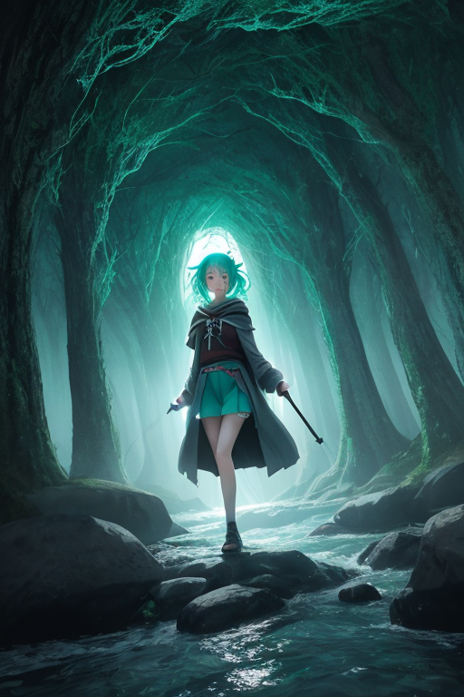
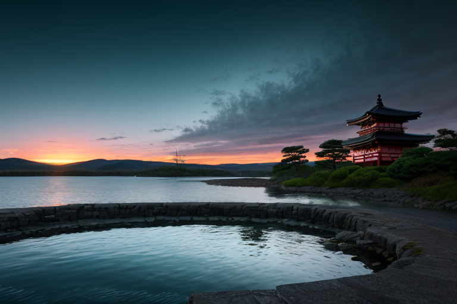
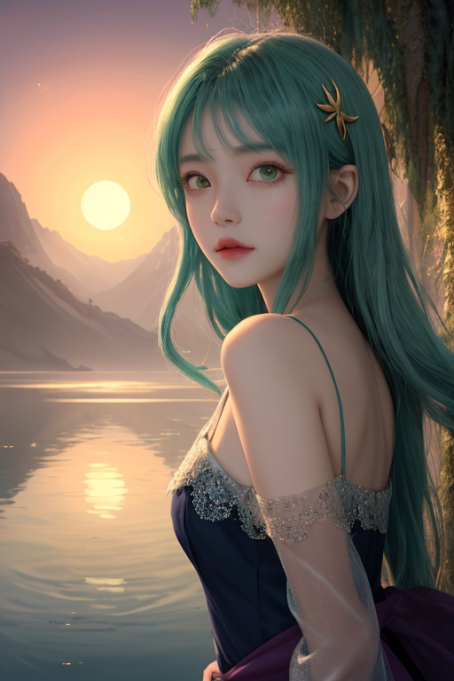
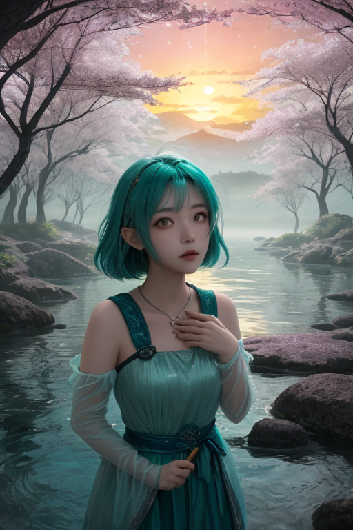

第一章 現実の茨城
あなたはまだ気づいていない。この土地にも、王がいることを。
霞ヶ浦の水面は、今日も鉛色に曇り、遠くの筑波山をかすかに映している。筑波研究学園都市の無機質な建物群は、この低い空の下で、静かに未来を計算し続けていた。土地は平坦で、どこまでも広がる畑と、点在する工場。ここは、何かが「終わった」場所のようにも、「始まろうとしている」場所のようにも見える。境界線だ。
その静けさの底には、封じられたものが眠っている。かつて水戸黄門が領内を巡ったその道筋も、今は国道となり、車の流れだけが単調に往復する。偕楽園の梅は、毎年決まったように咲き、散る。納豆の粘りも、干し芋の甘みも、すべてが許容範囲内の「日常」として繰り返される。歪みの列島・日本にあって、ここは特に「静か」だ。あまりに静かで、何かが意図的に調整され、抑制されているのではないかとすら思わせる。
人々はその静けさを、土地の気質と思っている。誰も、その均衡を保つために、一つの意思が絶えず働いているとは想像しない。

第二章 歪みの兆候
霞ヶ浦の水面は、今日も鉛色に曇っていた。筑波研究学園都市の実験室で、ある若手研究者が、許容値を僅かに超えるデータを記録した。それは、世界線「封印線」に刻まれた、最初の微かな亀裂だった。
境界王イバラキア・フロンティアは、筑波山の山頂でその揺らぎを感知した。深緑の外套が風に揺れる。本来、彼の役目は「実験」を封じ、この土地を静謐に保つことだ。水戸黄門が隠したという秘伝も、最先端の研究も、すべては境界の内側で完結させねばならない。それがこの世界線の定めである。
しかし、彼の胸中には、封じられた好奇心が蠢いていた。主席妖精フロンティが彼の耳元で囁く。「越えてみませんか？ あのデータの先にあるものを」
袋田の滝の轟音が、いつもより僅かに荒く聞こえた。大洗磯前神社の鳥居をくぐる潮風に、鉄の味が混じる。何かが、ゆっくりと、確実に、許容範囲を侵食し始めていた。

第三章 王の葛藤
霞ヶ浦の水面は、夕陽を吸い込み、鏡のように静かだった。境界王イバラキアは、湖畔に立ち、掌に銀色の微光を宿していた。それは歪みを調整する力であり、同時に、封じられた実験の衝動でもある。
「越えれば、何が起こるか」
彼は呟いた。筑波研究学園都市の無数の窓が、遠くで光る。あの建物の中では、境界を越える研究が、無意識に、しかし切実に求められている。彼はそれを感じ取っていた。干し芋のように時間をかけて凝縮された知識、納豆の糸のように絡み合うデータ群。すべては「越える」ための布石だった。
「でも、王は調整者だ」
トネリアが、湖の流れを微かに変えながら言った。彼女の声には、慎重さがあった。大洗の磯波が砕ける音が、警告のように聞こえる。
フロンティは風に乗って彼の周りを旋回する。「見たいでしょう？ あんこう鍋の身をほぐすように、未知を解きほぐしたくて」
彼は目を閉じた。水戸の地に刻まれた「不易流行」の精神。変わらぬものと、変わりゆくもの。彼はその狭間で、深緑の紋章が軋む音を聞いた。越えれば、この静謐な均衡は崩れる。だが、越えなければ、この好奇心という新たな感情は、やがて彼自身を蝕むだろう。
掌の光が、一瞬、激しく脈打った。

第四章「妖精との対話」
霞ヶ浦の水面は、夕陽を受けて鈍く光っていた。境界王は岸辺に立ち、掌に浮かぶ深緑の紋章を見つめる。軋みは止まらない。
「あの線はね、王様」
風の妖精フロンティが、そっと肩に舞い降りた。その声は、かつてないほど真摯だった。「つくばの研究者たちが『未知』に触れすぎた時、世界線にひびが入ったの。だから『封印線』が引かれた。越えちゃいけない、実験の限界を示すために」
大河の妖精トネリアが、水音と共に言葉を継ぐ。「筑波山の噴火も、あの地震も…全ては境界を守るための『調整』だった。歪みを封じ込めるために、小さな歪みを生み出してきた。それがこの国の守り方」
王は干し芋のように干からびた心に、湧き上がる疑問を感じた。「では、この感情は？」
「それは『漏れ』です」フロンティが囁いた。「封じた力が、あなたを通じて滲み出している。越えれば、この静謐な均衡は崩れる。でも…」
風が凪いだ。彼女の最後の言葉は、ほとんど聞こえなかった。
「越えなければ、あなたが崩れる」

第五章 微調整と余韻
霞ヶ浦の水面は、再び完璧な鏡となった。歪みは封じ戻された。王は、偕楽園の梅林に立ち、自らの内側を確認する。好奇心の奔流は、干し芋のように干からびた静寂の底に沈められている。手のひらに、微かな銀色の光が走る。これが、修復の代償だ。感情の「漏れ」を止めるために、彼は自らの未来への直感の一部を、永久的に封印線に縫い付けた。
フロンティがそっと肩に触れる。彼女の風は、かつてのような活発さを失い、静かなそよぎに変わっていた。「大丈夫ですか」その声には、王と同じものが滲んでいた。共に越えようとした境界の、代償。
筑波山の稜線が夕陽に染まる。研究学園都市の灯りが一つ、また一つと点り始める。彼らはもう、未来へ無謀に突っ込むことはできない。知ったのだ。境界を越えれば、何かが壊れる。自らが、あるいは世界が。
だが、袋田の滝の水音のように、封印の底で、かすかな脈動は残った。越えられなかった問いの余韻。それは災いではない。ただ、静謐な均衡のなかで、次に備えるための、微かな軋みである。
あなたの町にも、王がいる。